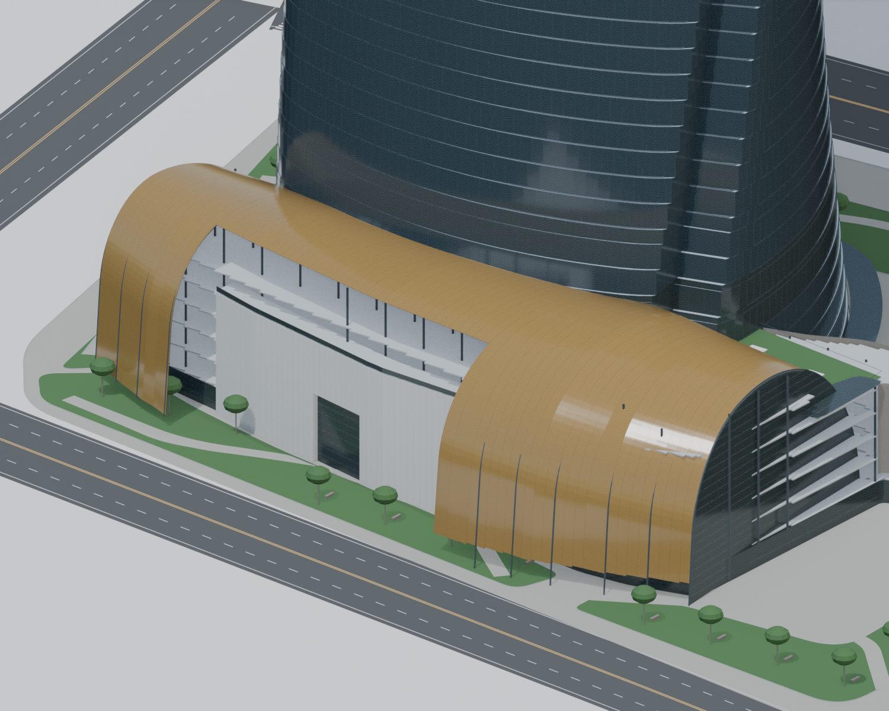
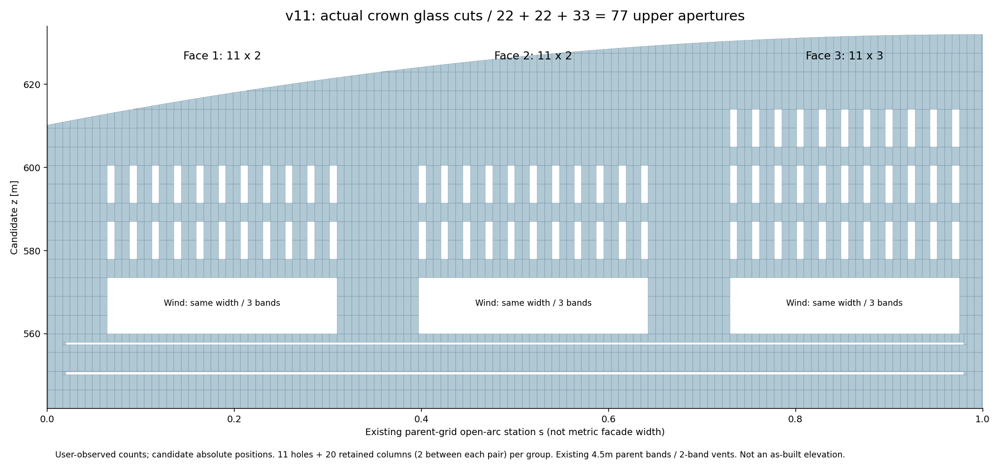
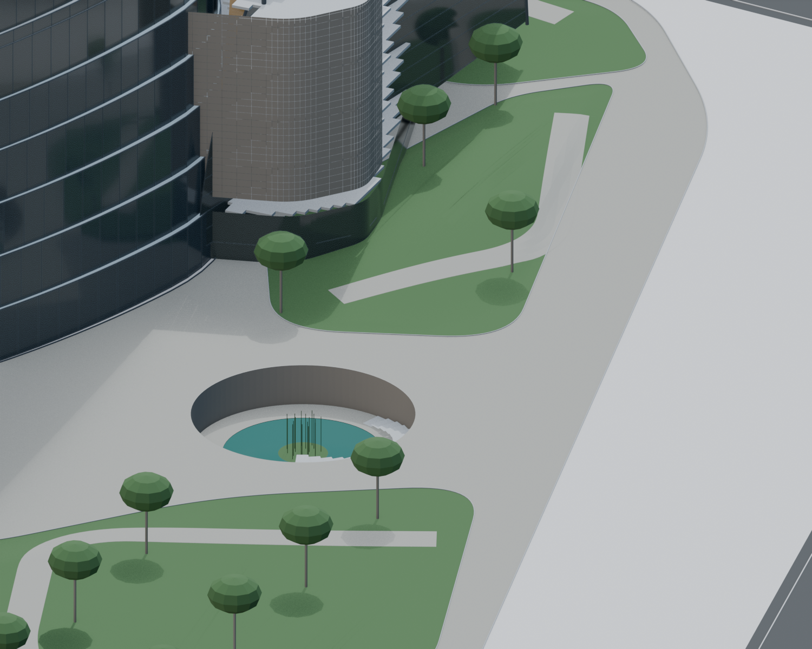
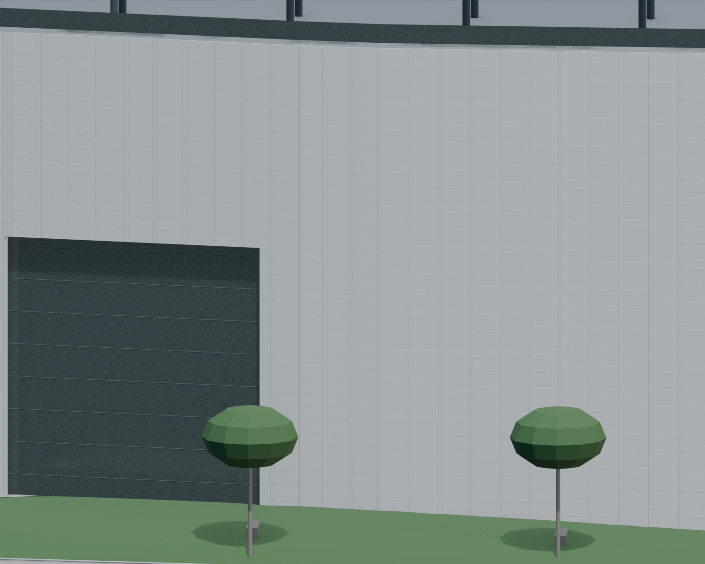
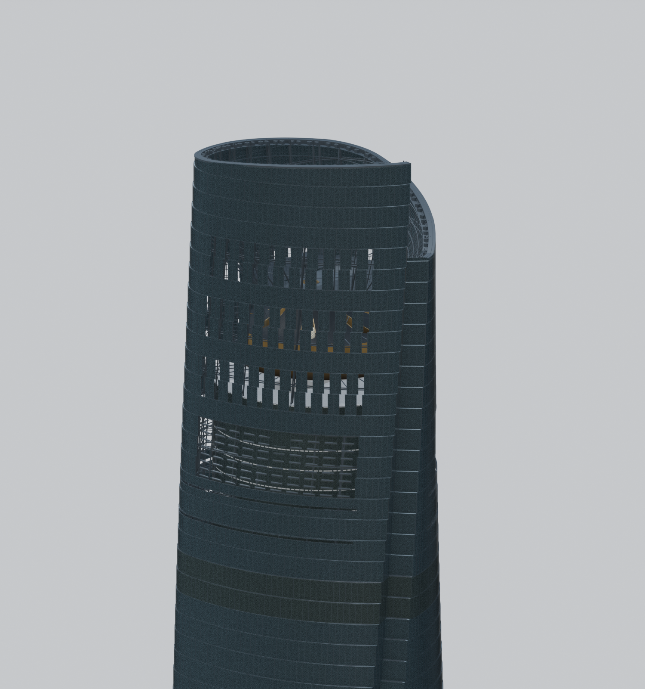
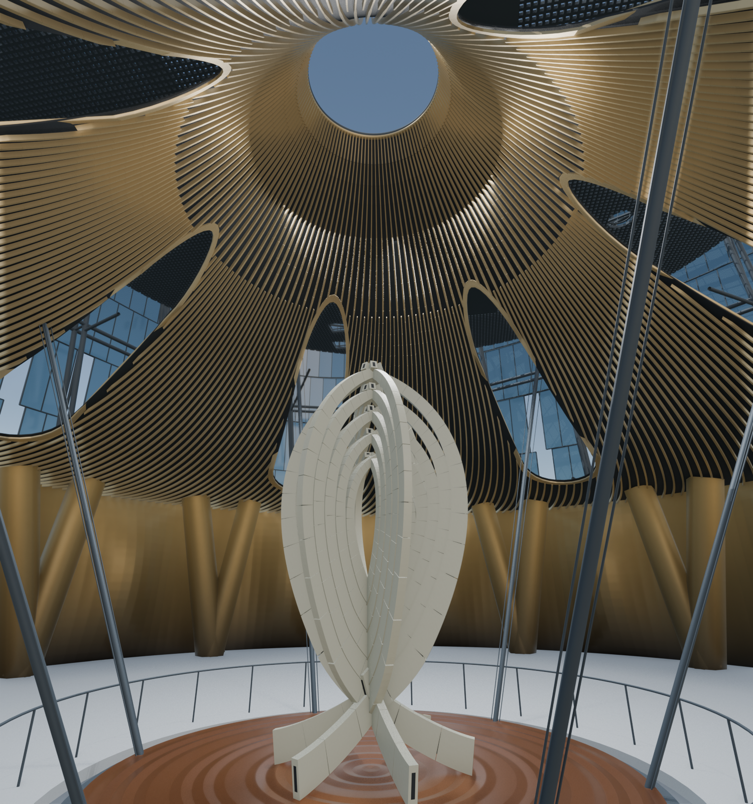
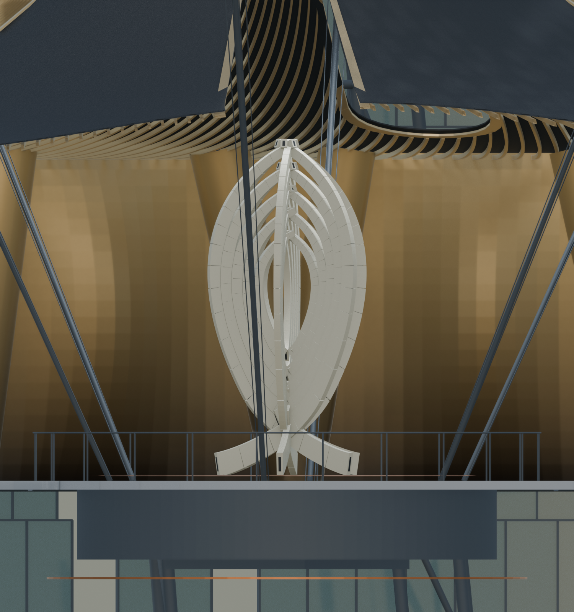
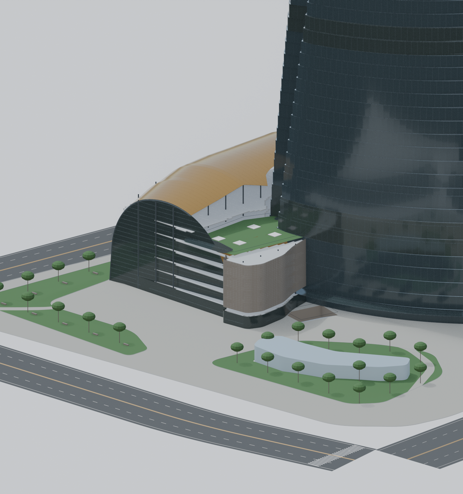

v12 参考资料与模型对照
左右为来源与当前模型。原图在线加载，版权归原发布方；需要网络。未标定摄影，不报告精确重投影误差，不宣称竣工一致。
Corrected long-side entry

Open upper balcony and smaller glass inset within independent stone blocks. Metric bounds remain candidates.
Actual parent-grid aperture unfolding

77 upper holes and3 wind bays checked in surviving generated parent polygons. Counts adopted from user observation; absolute coordinates unresolved.
Ground elevations and sunken garden

SWA-supported sunken garden type; height/profile and stair placement candidates, no surveyed levels.
Stone and inset glass

Real block joints and recessed glass; module and entry dimensions unverified.
Crown glass apertures


Gensler supplied photo / Connie Zhou. Unknown lens/viewpoint; visible arc only. Upper aperture counts 11x2 /11x2 /11x3 with two retained columns between apertures follow user observation; absolute positions are candidates. Narrow rings and two-band vent height remain fits. Original source / 原来源
Shanghai Eye and V hall supports


Owner photograph hosted by Rhino; CIMA model authors credited. Nominal7.7x3.89m/519 pieces from artist; exact fabrication shape unresolved. Original source / 原来源
Art backbone


CIMA supplied original Rhino screenshot; no downloadable construction model or metric camera calibration. Original source / 原来源
Podium built aerial


Different camera angles. Published ground trace supported; upper PR radii, closed west soffit and system zones remain fitted/unresolved. Original source / 原来源
Gensler / Architectural Journal2019 p31: published ground plan

v12: ground trace + fitted upper arc sweep; not shop CAD
Gensler / Architectural Journal2019 p29: site plan,100m scale

Local registration candidate; furniture/plant/road details unresolved
TJAD2014 Fig3.18:3 horizontal corner X pairs per level

Generated CWSS:60mm rods; node coordinates candidates